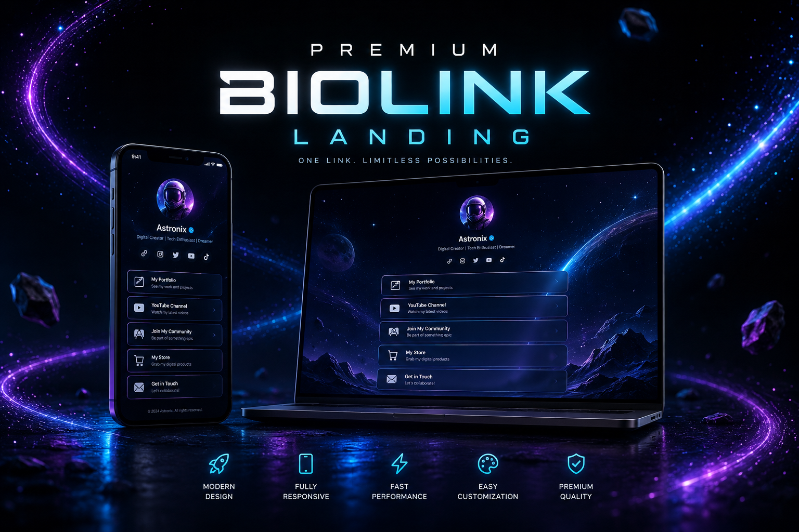
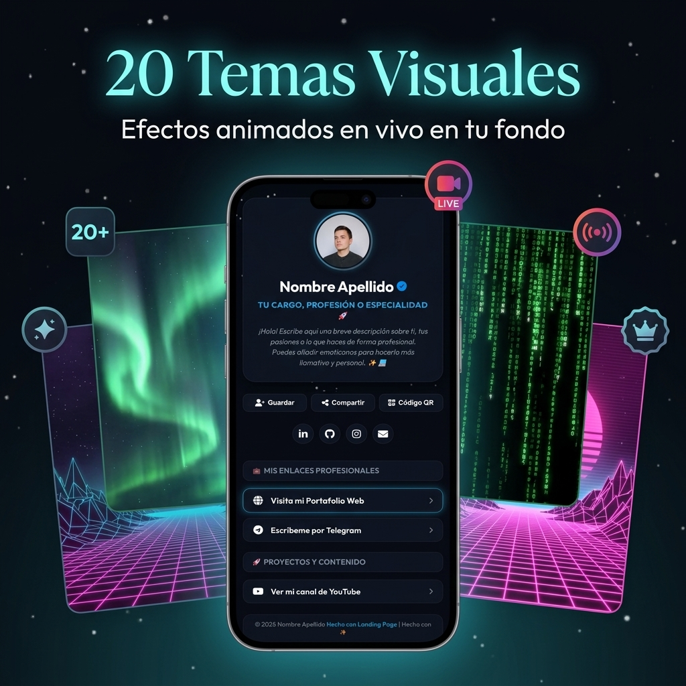
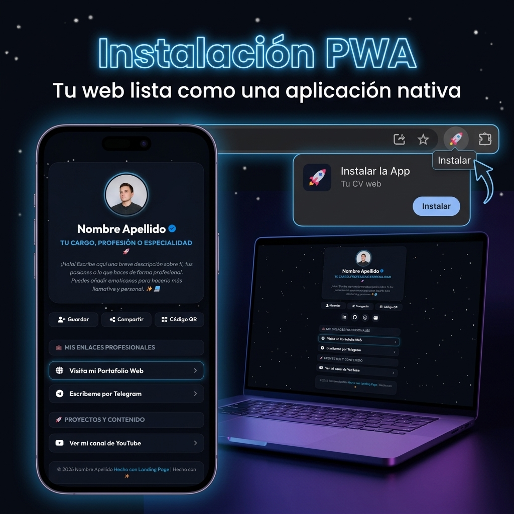

Documentación y Guía del Proyecto
Bienvenido al manual interactivo oficial para tu Landing Page Premium. Aquí aprenderás a sacarle el máximo partido al creador de temas, a entender el sistema de iconos flexibles, el soporte de HTML libre y cómo publicar tu web de forma profesional y 100% gratuita utilizando subdominios e integración con Cloudflare.

Glosario de Términos (Conceptos Básicos)
Si eres nuevo en el desarrollo web, estos son los conceptos clave que debes conocer. No te preocupes, se explican de forma sencilla:
Hosting (Alojamiento)
Es un ordenador conectado a internet las 24 horas del día donde guardas los archivos de tu web (como tu index.html) para que todo el mundo pueda verlos introduciendo tu dirección web.
Dominio y Subdominio
Un dominio es tu nombre web exclusivo (ej: miweb.com). Un subdominio es una palabra añadida delante del dominio original (ej: tu-usuario.is-a.dev o tu-dominio.pp.ua).
DNS (Dirección DNS)
Es la "agenda de contactos" de internet. Traduce el nombre de tu web (legible para humanos) en la dirección IP del ordenador donde está alojada tu web.
Registro CNAME
Es una instrucción DNS específica que le dice a internet: "Cuando alguien visite mi subdominio A, mándalo a la dirección del hosting B" (ej: de tu-usuario.is-a.dev a tu-usuario.github.io).
Uso de la Web Principal
La Landing Page está diseñada bajo un enfoque minimalista y móvil (Mobile-First) con un alto nivel estético de neón y glassmorphism. Su función es servir como centro de enlaces y tarjeta de presentación digital.
Estructura Visual de la Página
Banner y Avatar
Un banner superior dinámico (100% de la pantalla horizontalmente) seguido de tu fotografía de perfil circular, cuadrada, poligonal o con formas orgánicas.
Cabecera Profesional
Muestra tu nombre, insignia de verificado (opcional), título profesional y una biografía detallada en múltiples párrafos que soporta textos interactivos e iconos.
Contenedores de Enlaces
Enlaces interactivos organizados por secciones. Cuentan con animaciones hover fluidas, micro-animaciones continuas si están destacados y soporte para iconos a la izquierda.
Estructura de Archivos del Proyecto
Para entender cómo se compone el proyecto, aquí tienes un desglose de los archivos principales de la carpeta raíz y cuál es su función específica:
| Archivo | Tecnología | Propósito / Explicación sencilla |
|---|---|---|
| index.html | HTML5 | La maqueta o esqueleto de tu Landing Page. Contiene la estructura básica de la cabecera, del banner, la sección del avatar, el cuerpo para los enlaces y el footer. No necesitas editarlo a mano. |
| index.css | CSS3 | El diseño y la ropa de la web. En él se definen las 20 variables de color para los temas visuales, el efecto esmerilado translúcido de las cajas (glassmorphism), el comportamiento de los botones y los recortes geométricos del avatar. |
| app.js | JavaScript (JS) | El cerebro de la página. Lee la configuración del archivo config.js y se encarga de dibujar el perfil, inyectar los enlaces, controlar el banner de imagen/video y renderizar los espectaculares fondos animados interactivos en Canvas. |
| config.js | JavaScript (Data) | El archivo de datos que guarda toda tu configuración (nombre, biografía, enlaces, redes, tema y estilos de caja). Este es el archivo que se genera automáticamente al pulsar "Exportar" en el creador. |
| theme-creator/ | Carpeta | Contiene la herramienta visual editora de temas. Dentro de ella están index.html (interfaz del editor) y creator.js (el código que simula el teléfono móvil en tiempo real y escribe tus datos para descargarlos). |
Guía del Creador de Temas
El Creador de Temas (ubicado en la carpeta /theme-creator) es una interfaz visual interactiva que te permite editar toda la configuración de la Landing Page sin necesidad de escribir código directamente.
Live Preview en Tiempo Real
Cualquier cambio que realices en el panel izquierdo (colores, temas, perfil, enlaces) se reflejará instantáneamente en el simulador móvil del panel derecho.
Explicación de Funcionalidades
Ajustes de Perfil y Apariencia
Introduce tu nombre, título profesional, y activa/desactiva la insignia de verificado. Elige la foto de perfil (o video) y selecciona la forma geométrica (circular, cuadrada, redondeada, hexagonal, octogonal, corazón, etc.) junto con un deslizador de tamaño para regular su dimensión sin romper la estructura de la página.
Banner Superior (Imagen o Video)
Define si deseas un banner de fondo superior en tu cabecera. Puedes cargar una imagen o un archivo de video local, o pegar una URL remota. Si decides no incluir banner, la página se reajusta automáticamente sin dejar espacios vacíos.
Biografía por Párrafos
Añade tantos párrafos como quieras. Puedes elegir si cada párrafo tiene una caja de lectura translúcida individual, o si prefieres aplicar la caja de lectura a toda la biografía junta. ¡Soporta código HTML completo!
Gestión de Enlaces y Separadores Transparentes
Puedes arrastrar y soltar (Drag and Drop) los enlaces para reordenar la página. Añade Separadores transparentes entre bloques y regula su altura mediante un deslizador digital para controlar el espaciado exacto.
Exportación Automática
Al finalizar la edición, haz clic en "Exportar config.js" para descargar el archivo. Solo debes reemplazar el archivo config.js en el directorio raíz de tu proyecto para aplicar los cambios a la web oficial.
Opciones de Configuración del Creador
Aquí tienes una guía exhaustiva de cada una de las opciones del editor visual y cómo afectan al layout (distribución visual) de tu web:
1. Datos de Cabecera y Perfil
- Nombre Completo: Tu nombre de marca o personal. Soporta código HTML.
- Insignia Verificado: Muestra un pequeño check azul al lado de tu nombre de marca.
- Título Profesional: Tu cargo actual (ej:
<b>UI Designer</b>). - Foto de Perfil / Avatar (Imagen o Video): Puedes elegir un archivo local escribiendo su nombre (ej:
profile.jpgoavatar-animado.mp4) o pegar un enlace web. Al seleccionar Vídeo (MP4), se reproducirá un clip corto en bucle silenciado con auto-reproducción. - Forma del Avatar: 9 formas de recorte integradas (Círculo, Cuadrado, Cuadrado Redondeado, Triángulo, Hexágono, Octágono, Rombo, Corazón y Estrella).
- Tamaño de la Foto: Controla con un slider de píxeles el diámetro de tu foto/video de perfil (desde 60px hasta 160px).
2. Banner Superior
- Mostrar Banner: Activa/desactiva la cabecera a pantalla completa.
- Tipo de Banner: Selecciona si el fondo superior será una imagen estática o un video (MP4/WebM) dinámico en bucle y silenciado.
- URL o Nombre del Archivo: Ruta del recurso. Si escribes
mi-banner.mp4y guardas ese video en tu carpeta, funcionará de inmediato. Si no se activa la casilla del banner, el contenido del perfil subirá automáticamente sin desajustes.
3. Diseños y Layouts de la "Caja de Lectura"
El creador ofrece varias modalidades estéticas para colocar fondos translúcidos esmerilados (efecto glassmorphism) sobre tu web:
Caja en toda la Cabecera
Envuelve la foto de perfil, tu nombre, título profesional y biografía completa bajo una única tarjeta translúcida unificada.
Caja en toda la Biografía
Excluye tu nombre y tu avatar, y envuelve únicamente tus párrafos de biografía en una elegante tarjeta de lectura.
Cajas por Párrafo Individual
Te permite añadir una tarjeta de fondo de lectura separada para cada párrafo de tu biografía de forma independiente. Útil para separar ideas.
Caja de Secciones Unificada
Al activarlo, todo tu contenido de secciones y enlaces de abajo se agrupará en una única caja de lectura gigante.
Ajuste de Color y Opacidad de las Cajas: Tienes deslizadores en el panel para regular tanto el color hexadecimal de las cajas como el nivel de transparencia (opacidad, de 0 a 1) para adaptarlos exactamente al fondo animado de tu tema.
4. Menú de Redes Sociales
Introduce las URLs de tus plataformas. El sistema añadirá un icono circular en la parte superior. Si dejas el input vacío, el botón correspondiente desaparecerá en vivo.
5. Listado de Contenido Dinámico
Permite administrar los tres tipos de elementos del cuerpo:
- Enlaces (Links): Introduce el título del botón, su URL, icono (ej:
whatsappofa-brands fa-tiktok) y una casilla para "Destacar Enlace" (aplica una animación continua como destellos o vibración). - Títulos de Sección: Títulos organizadores para agrupar enlaces. Tienen un interruptor para decidir si tienen caja translúcida o si van integrados directamente sobre el fondo animado.
- Separadores: Bloques invisibles que añaden espacio en blanco para separar el contenido. Mediante un slider, puedes decidir su altura exacta de 5px a 100px.
Carga de Imágenes y Videos
Puedes configurar imágenes o videos de fondo locales de dos formas dentro de los campos del creador de temas:
1. Uso de Archivos Locales (Recomendado)
Guarda tus fotos, imágenes o videos en la misma carpeta del proyecto (donde está index.html). En el creador de temas, en el input correspondiente, simplemente escribe el nombre exacto del archivo con su extensión.
// Para el Avatar
profile.jpg
// Para el Banner
banner.mp4 (o banner.jpg)2. Uso de URLs Remotas
Si prefieres alojar tus imágenes en servicios externos (Imgur, Discord, etc.), pega la URL directa completa del archivo multimedia.
https://i.imgur.com/TuImagenDirecta.jpgRutas Relativas en Subcarpetas
Si prefieres ordenar tus recursos en una carpeta interna (ej: una carpeta llamada images), en los inputs debes escribir la ruta relativa: images/mifoto.jpg.
Sistema Flexible de Iconos
El proyecto utiliza la librería FontAwesome v6. El sistema lee el campo de icono y decide de forma inteligente qué renderizar.
http o ./?<img> (Imagen local o URL)fa- o prefijos?ICON_MAP?fas fa-{texto}Diferencia entre formatos de escritura
| Formato de entrada | Cómo lo interpreta el sistema | Resultado / Caso de Uso |
|---|---|---|
Busca en el mapa interno ICON_MAP |
Carga fab fa-whatsapp automáticamente. Ideal para principiantes. |
|
| fa-brands fa-whatsapp | Detecta el prefijo y aplica clases directas | Renderiza la etiqueta correcta. Es el método más preciso de FontAwesome. |
| fab fa-whatsapp | Detecta prefijo alternativo de FontAwesome v5/v6 | Igual al anterior, funciona perfectamente por compatibilidad. |
| <i class="fa-brands fa-whatsapp"></i> | HTML crudo | No poner esto en los campos de "Icono". Esto se usa únicamente dentro de textos libres como la biografía o descripciones. |
Cómo buscar nuevos iconos
Para buscar e incorporar nuevos iconos en tus enlaces o títulos:
- Ingresa al buscador oficial de FontAwesome Icons.
- Busca el servicio que necesitas (ej: "tiktok", "instagram", "envelope").
- Copia la clase CSS del icono gratuito que encuentres (ej:
fa-brands fa-tiktokofa-regular fa-envelope). - Pégala directamente en el campo Icono del creador de temas.
Soporte de HTML Libre
Para dar la máxima libertad de personalización visual, los campos de Biografía, Título Profesional, Secciones y Enlaces permiten código HTML puro.
Guía rápida de etiquetas soportadas y ejemplos
<b>Desarrollador Full Stack</b> o <strong>Importante</strong><i>Especializado en interfaces premium</i><u>Disponible para proyectos freelance</u>Precio anterior: <s>$99 USD</s> ¡Ahora gratis!Primer párrafo de mi biografía.<br>Segundo párrafo en el mismo bloque.<span style="color: #f43f5e;">Me apasiona</span> el diseño interactivo.Contáctame a mi WhatsApp <i class="fa-brands fa-whatsapp"></i> para conversar.Ejemplo Combinado para tu Biografía
Prueba a copiar y pegar este bloque directamente en tu biografía dentro del creador de temas:
Hola, soy <b>Nombre</b> <i class="fa-solid fa-code"></i>.<br>
Creador de <span style="color: var(--accent-color); font-weight: bold;">experiencias web interactivas</span>. <i class="fa-regular fa-lightbulb"></i>Cómo Añadir Temas, Botones y Efectos de Animación (Desarrolladores)

Si tienes conocimientos de HTML/CSS/JS y deseas expandir el código fuente para crear nuevos temas de fondo con el canvas, nuevos estilos de botón o efectos de animación interactiva:
A. Añadir un Nuevo Tema Visual con Efectos de Fondo
Declarar las Variables CSS del Tema
Abre index.css y añade las variables de colores y fondos para tu nuevo tema utilizando el selector de clase body.theme-nombre:
/* TEMA VOLCANO */
body.theme-volcano {
--bg-color: #0b0200; /* Color de fondo base */
--text-muted: #f87171; /* Color del texto secundario/biografía */
--accent-color: #f97316; /* Color de acento principal (Naranja fuego) */
--accent-glow: rgba(249, 115, 22, 0.4); /* Resplandor/Sombra del color de acento */
--glass-bg: rgba(30, 8, 4, 0.8); /* Fondo de los botones (translúcido) */
--glass-border: rgba(249, 115, 22, 0.15); /* Borde fino de los botones */
background: radial-gradient(circle at center, #2e0802 0%, #0b0200 100%) !important;
}Programar la Animación en Canvas (app.js y creator.js)
Para que tu tema tenga un fondo animado en el lienzo (Canvas), abre app.js y localiza la función initBackgroundAnimation().
1. Inicializar Partículas:
Busca el bloque // --- CONFIGURACIÓN E INICIALIZACIÓN DE PARTÍCULAS POR TEMA --- y añade la inicialización de tus partículas:
else if (theme === "volcano") {
numParticles = 50; // Cantidad de partículas
for (let i = 0; i < numParticles; i++) {
particles.push({
x: Math.random() * width,
y: Math.random() * height,
size: Math.random() * 4 + 1,
speedY: -(Math.random() * 0.4 + 0.1), // Flotan hacia arriba
alpha: Math.random() * 0.7 + 0.2
});
}
}2. Dibujar las Partículas en el bucle:
Busca la función
draw() dentro de initBackgroundAnimation() y añade el dibujado:
else if (theme === "volcano") {
// Limpiar con color de fondo del tema
ctx.fillStyle = "rgba(11, 2, 0, 0.25)";
ctx.fillRect(0, 0, width, height);
particles.forEach((p) => {
p.y += p.speedY; // Mover
if (p.y < -20) { p.y = height + 20; p.x = Math.random() * width; } // Reiniciar al salir
ctx.beginPath();
ctx.arc(p.x + mouseX * p.size * 0.3, p.y + mouseY * p.size * 0.3, p.size, 0, Math.PI * 2);
ctx.fillStyle = `rgba(249, 115, 22, ${p.alpha})`; // Naranja
ctx.fill();
});
}theme-creator/creator.js dentro de la función initPreviewAnimation().
Añadir la Opción en el Selector del Creador de Temas
Abre theme-creator/index.html y busca el selector <select id="select-theme">. Añade tu nueva opción:
<option value="volcano">21. Volcano (Fumarola de magma y lava)</option>B. Cómo Añadir un Nuevo Estilo de Botón en CSS
Los estilos de botones se definen 100% mediante CSS y se asignan mediante la clase .btn-style-nombre.
Declarar los estilos en index.css
Abre index.css y añade las clases para el estado normal y el estado hover (:hover). Utiliza las variables CSS de acento y resplandor para que tu estilo se adapte automáticamente al tema de fondo seleccionado:
/* ESTILO BORDE NEÓN TRIPLE */
.btn-style-triple-neon {
background: transparent;
border: 1.5px solid var(--accent-color);
box-shadow: 0 0 4px var(--accent-color), 0 0 10px var(--accent-glow);
color: var(--text-color);
}
.btn-style-triple-neon:hover {
background: rgba(255, 255, 255, 0.05);
box-shadow: 0 0 8px var(--accent-color), 0 0 20px var(--accent-glow);
transform: translateY(-2px); /* Elevar sutilmente */
}Registrar la opción en el HTML del Creador
Abre theme-creator/index.html, busca el desplegable <select id="select-button-style"> y añade:
<option value="triple-neon">21. Triple Neon (Líneas finas de neón)</option>C. Cómo Añadir un Nuevo Efecto / Animación de Botón
Las animaciones de botones utilizan animaciones keyframes estándar de CSS y se definen bajo la clase .btn-anim-nombre.
Crear la animación en index.css
Abre index.css y define la animación @keyframes junto con la clase del botón:
/* ANIMACIÓN SPIN-SHAKE (Vibrar rotando) */
.btn-anim-spin-shake {
animation: spinShakeButton 4s infinite ease-in-out;
}
@keyframes spinShakeButton {
0%, 90%, 100% { transform: rotate(0deg); }
92% { transform: rotate(-2deg); }
94% { transform: rotate(2deg); }
96% { transform: rotate(-1deg); }
98% { transform: rotate(1deg); }
}Registrar la opción en el HTML del Creador
Abre theme-creator/index.html, busca el desplegable <select id="select-button-anim"> y añade:
<option value="spin-shake">22. Spin Shake (Vibración y rotación en bucle)</option>Hosting Gratuito (Alojamiento de tu Web)
Cuando finalices de editar la configuración en el creador, tendrás tus archivos de web listos. Aquí tienes los tutoriales detallados para subirlos a Internet de manera totalmente gratuita.
1. GitHub Pages (pages.github.com)
GitHub es una plataforma profesional para guardar código, y te regala hosting ilimitado para webs estáticas como la tuya.
Crear Cuenta en GitHub
Regístrate de forma gratuita en github.com con tu correo electrónico y elige tu nombre de usuario.
Crear el Repositorio de tu Web
Haz clic en el botón "+" (arriba a la derecha) -> "New repository". Asigna exactamente este nombre a tu repositorio: tuusuario.github.io (reemplaza "tuusuario" por tu nombre real de usuario de GitHub). Asegúrate de que esté configurado como Public.
Subir los Archivos de tu Proyecto
Dentro del repositorio que has creado, haz clic en "uploading an existing file". Arrastra y suelta todos los archivos de tu proyecto (incluyendo index.html, app.js, index.css, config.js y tus fotos/videos locales). Haz clic en "Commit changes" abajo del todo para guardar.
Listo
Tu web estará visible automáticamente en pocos minutos en la dirección: https://tuusuario.github.io.
2. Cloudflare Pages (pages.cloudflare.com)
Una plataforma hiperveloz que ofrece ancho de banda ilimitado, protección gratuita contra hackers y una de las redes más rápidas de Internet.
Crear Cuenta
Regístrate en dash.cloudflare.com.
Crear Proyecto Pages
En tu panel de Cloudflare, ve a la barra lateral izquierda, pulsa en Workers & Pages -> pestaña Pages -> haz clic en "Create an Application" -> "Upload assets".
Subir Carpeta de la Web
Asígnale un nombre a tu proyecto y arrastra la carpeta completa de tu Landing Page al recuadro de subida. Cloudflare procesará la carga en segundos.
Desplegar
Haz clic en "Deploy Site". Cloudflare te proporcionará una dirección única gratuita terminada en .pages.dev (ej: mi-landing.pages.dev).
3. Surge.sh (surge.sh)
Excelente herramienta para publicar tu web en cuestión de segundos utilizando la consola de comandos de tu ordenador.
Instalar Node.js
Descarga e instala la versión recomendada de Node.js desde su web oficial: nodejs.org.
Instalar Surge en tu Ordenador
Abre la Consola de comandos (en Windows busca "cmd" o "PowerShell"). Escribe el siguiente comando y pulsa Intro:
npm install -g surgePublicar la Web
Navega con la consola hasta la carpeta donde tienes tu proyecto o haz clic derecho en la carpeta de tu proyecto y selecciona "Abrir en terminal". Luego escribe simplemente:
surge.surge.sh que desees para tu web.
4. Codeberg Pages (pages.codeberg.org)
Una alternativa de código abierto a GitHub con servidores en Europa, 100% gratuita y sin publicidad.
Crear Cuenta
Regístrate en codeberg.org.
Crear Repositorio
Crea un repositorio haciendo clic en el botón "+" -> "New Repository". El repositorio debe tener exactamente el nombre: pages.
Subir Archivos
Sube los archivos de tu Landing Page a la rama principal (main). Una vez subidos, tu web estará online de forma inmediata en la dirección: https://tuusuario.codeberg.page.
5. Sourcehut Pages (srht.site)
Una plataforma ultra minimalista y rápida orientada a la privacidad.
Registro
Crea tu cuenta de usuario en meta.sr.ht.
Subir Web
Puedes empaquetar tu carpeta en un archivo comprimido .tar.gz y subirla directamente usando el formulario interactivo de su panel web en srht.site.
Proveedores de Subdominios Gratuitos
Si deseas un nombre personalizado bonito sin tener que comprar un dominio de pago, utiliza cualquiera de estos proveedores oficiales de subdominios gratuitos:
1. pp.ua (vía nic.ua)
Ofrece subdominios .pp.ua oficiales gratis. Requiere una cuenta en nic.ua y confirmación por Telegram:
Buscar y Registrar
Entra en nic.ua, introduce tu subdominio deseado terminado en .pp.ua (ej: tu-dominio.pp.ua). Agrégalo al carrito a coste $0 y procesa la compra gratuita hasta el final rellenando tus datos.
Iniciar el Bot de Telegram
Abre la aplicación Telegram en tu teléfono o PC, busca el bot oficial de nic.ua: @NicUaBot (o haz clic en t.me/NicUaBot) y envíale el comando /start.
Autorizar Número
El bot te pedirá autorización para validar que eres humano. Haz clic en el botón de Telegram de abajo para compartir tu número telefónico con el bot.
Activar Dominio
Envía al bot el comando /activate. Te mostrará un botón con tu dominio pendiente. Pulsa en él y el bot te notificará que tu subdominio ha sido activado con éxito. Ahora ya puedes configurar sus DNS en el panel web de nic.ua.
2. DigitalPlat Domain Portal (domain.digitalplat.org)
Un servicio que distribuye subdominios gratuitos en extensiones de red como *.dp.ua o *.net.ua de forma directa.
Registro
Ve a domain.digitalplat.org y regístrate.
Solicitar Subdominio
Busca un nombre disponible, elige la extensión de subdominio gratuita que prefieras e introduce tus servidores DNS o registros de apuntamiento.
3. is-a.dev (is-a.dev)
Un servicio popular para obtener la terminación tunombre.is-a.dev de forma directa mediante la gestión de ficheros en GitHub.
Hacer un Fork
Inicia sesión en tu cuenta de GitHub, entra al repositorio github.com/is-a-dev/register y haz clic en el botón "Fork" (arriba a la derecha) para copiar el repositorio a tu perfil personal.
Crear el Archivo de tu Dominio
Entra a la carpeta domains en tu copia. Haz clic en "Add file" -> "Create new file". Ponle por nombre a tu archivo: tu-usuario.json (ej: si deseas tu-usuario.is-a.dev, tu archivo debe llamarse tu-usuario.json).
Configurar el JSON
Pega este código dentro del editor de tu nuevo archivo JSON:
{
"owner": {
"username": "tu-usuario-github",
"email": "tuemail@gmail.com"
},
"record": {
"CNAME": "tuusuario.github.io"
}
}Enviar el Pull Request
En tu repositorio de GitHub, haz clic en la pestaña "Pull requests" -> botón verde "New pull request" -> "Create pull request". Un sistema automatizado comprobará que la estructura sea correcta y fusionará tu archivo en pocos minutos, tras lo cual tu dominio estará activo.
4. js.org (js.org)
Un subdominio con terminación tunombre.js.org exclusivo para programadores de JavaScript alojados en GitHub Pages.
Requisito Inicial
Debes tener tu landing page activa y publicada en GitHub Pages (ej: en tuusuario.github.io).
Hacer Fork del Repositorio de js.org
Ve a github.com/js-org/js.org y haz un Fork de su repositorio en tu cuenta.
Editar el Archivo de Mapeo
Abre el archivo cnames.active.js. Añade tu subdominio respetando el orden alfabético estricto de la lista de esta forma:
"tunombre": "tuusuario.github.io",Enviar Pull Request
Crea un Pull Request desde su pestaña en GitHub. Una vez aprobado por los mantenedores de la plataforma, el dominio estará listo.
5. thedev.id / Upset.dev (thedev.id)
Te provee un dominio gratuito de programador del tipo usuario.thedev.id.
Hacer Fork del Repositorio
Entra en github.com/thedev-id/register y haz un fork a tu perfil.
Crear Fichero JSON
Crea un archivo llamado domains/tuusuario.json. Copia el siguiente esquema en su interior:
{
"owner": {
"username": "tu-usuario-github",
"email": "tuemail@example.com"
},
"record": {
"CNAME": "tuusuario.github.io"
}
}Pull Request
Abre el Pull Request en GitHub. El sistema automatizado validará y añadirá tu subdominio de forma gratuita en pocos minutos.
6. isroot.in (isroot.in)
Servicio web para desarrolladores que ofrece subdominios del tipo *.isroot.in e *.isroot.dev de manera fácil.
Registro en la Web
Entra en isroot.in y crea tu cuenta de usuario.
Crear Subdominio
Ve a tu panel de control, haz clic en "Add new domain / subdomain", escribe el nombre deseado y pulsa Guardar.
Configurar DNS
En el panel del subdominio de isroot.in, selecciona "DNS Manager" e inserta tu registro de tipo CNAME apuntando al hosting.
7. getfreedomain.name (getfreedomain.name)
Un buscador tradicional de dominios gratis de segundo nivel (como *.free.hr, *.co.pl, etc.).
Registro y Compra Gratuita
Entra en getfreedomain.name, busca la extensión gratuita que desees, agrégala y finaliza la facturación a coste cero.
DNS Manager
Accede a tus dominios en el menú superior, ve a "DNS Management" y añade tus registros de apuntamiento.
Cómo Conectar tu Subdominio a tu Hosting
Una vez que tienes el hosting (donde están guardados tus archivos) y el subdominio gratuito (tu dirección de texto), debes unirlos. Te explicamos los dos métodos disponibles:
Simple, rápido y sin cuentas intermedias.
Máxima seguridad, velocidad y estadísticas de tráfico.
Método 1: Usando el Panel de DNS Nativo del Proveedor (Sin Cloudflare)
Es la opción más sencilla si no deseas crear cuentas adicionales en otros servicios. Puedes gestionar los registros desde el panel de control del mismo proveedor del subdominio.
Entrar al panel DNS del Proveedor
Accede a tu cuenta de dominio (nic.ua, isroot.in, getfreedomain.name, etc.) y ve a la sección de administración de dominios / DNS.
Crear Registro CNAME
Añade un registro nuevo con los siguientes datos exactos:
- Tipo de Registro (Type):
CNAME - Nombre / Host (Name):
@(o déjalo en blanco si representa tu dirección principal) - Valor / Destino (Value / Target): La dirección de tu hosting de origen (ej:
tuusuario.github.iootu-sitio.pages.dev). - TTL: Automático o 14400.
Guardar Cambios
Aplica la configuración. Los cambios tardarán unos minutos (o hasta unas pocas horas) en actualizarse por internet.
Método 2: A través de Cloudflare (Gestionado, Seguro y con Proxy)
Este método es el más potente e idóneo para proyectos profesionales, ya que Cloudflare actúa como intermediario proporcionando protección anti-hackers, estadísticas, certificado SSL (candado de seguridad seguro) y velocidad optimizada de forma ilimitada y gratuita.
Agregar tu Dominio en Cloudflare
Inicia sesión en dash.cloudflare.com y haz clic en "Add a Site". Introduce tu subdominio registrado (ej: tu-dominio.pp.ua) y selecciona el plan gratuito ($0).
Cambiar los Nameservers en tu Proveedor
Cloudflare te dará dos direcciones de Servidor de Nombres (Nameservers). Por ejemplo:
- eva.ns.cloudflare.com
- will.ns.cloudflare.com
Añadir Registro DNS en Cloudflare
Una vez que Cloudflare detecte el cambio de Nameservers (te enviará un correo), ve a la pestaña DNS -> Records de Cloudflare y pulsa en "Add record":
- Type (Tipo):
CNAME - Name (Nombre):
@ - Target (Destino): Escribe tu hosting (ej:
tuusuario.github.iootu-sitio.pages.dev) - Proxy Status (Nube): Mantén activa la nube naranja (Proxied) para disfrutar del escudo y SSL gratuito.
Paso Final: Configurar tu Dominio en la Web de Hosting
Tanto si usas el Método 1 como el Método 2, debes indicarle a tu hosting que responda cuando alguien escriba tu dominio personalizado:
Si tu hosting es GitHub Pages:
Entra a tu repositorio de GitHub -> ve a Settings (en el menú superior) -> sección Pages (en el menú izquierdo). En la casilla de "Custom domain" escribe tu dominio (ej: tu-dominio.pp.ua) y pulsa en Save. Asegúrate de activar la casilla "Enforce HTTPS" para forzar la navegación segura.
Si tu hosting es Cloudflare Pages:
Entra en el panel de Cloudflare de tu proyecto Pages -> ve a la pestaña "Custom domains" -> haz clic en "Set up a custom domain". Escribe tu subdominio (ej: tu-dominio.pp.ua) y pulsa continuar. Cloudflare configurará y conectará todo automáticamente.
SEO y Vista Previa al Compartir (Open Graph)
Cuando compartes el enlace de tu sitio web en aplicaciones como WhatsApp, Telegram, Facebook o Discord, la plataforma genera automáticamente una tarjeta visual (burbuja de compartido) con una imagen, un título y una descripción. Esto se conoce como protocolo Open Graph (OG).
¿Por qué no funciona dinámicamente con JavaScript?
Los robots de redes sociales (crawlers o scrapers) son rastreadores muy simples. Cuando envías un enlace, el bot descarga únicamente el archivo index.html de tu servidor y extrae las etiquetas <meta> de su encabezado (<head>). Los bots no ejecutan código JavaScript. Por lo tanto, no pueden leer tu archivo config.js de manera dinámica. La única forma de que se muestren las imágenes e información correctas al compartir es teniendo las etiquetas HTML escritas de forma estática en el index.html.
Cómo Utilizar el Simulador SEO en el Creador de Temas
El Creador de Temas cuenta con un módulo de simulación y generación automática de etiquetas en la Sección 7: SEO y Vista Previa en Redes.
Configurar los Campos SEO
Rellena las opciones en el panel del creador:
- Dominio de tu Web: Escribe la URL exacta de tu sitio (ej:
https://tu-usuario.pages.dev). Es fundamental para que los bots ubiquen las rutas de tus imágenes. - Título del Enlace: El título principal de la tarjeta. Por defecto se autogenera uniendo tu Nombre + Cargo (si no lo has modificado manualmente).
- Descripción: Un texto breve sobre tu web. Se pre-carga con el primer párrafo de tu biografía de forma inteligente.
Seleccionar el Origen de la Imagen
Elige cuál quieres que sea la imagen de portada de tu tarjeta de compartido entre estas 5 opciones:
- Foto de Perfil (Avatar): Muestra tu foto o avatar principal en la tarjeta.
- Banner de Cabecera: Muestra el banner superior configurado.
- Código QR de tu Web: Genera dinámicamente un código QR escaneable directo a tu landing usando la API de QRServer. Ideal para que cualquiera pueda escanear tu tarjeta visual de compartido y acceder directamente a tu web.
- URL Personalizada: Introduce una ruta de archivo local (ej:
assets/og-image.jpg) o una URL de internet. - Sin Imagen: Excluye la imagen para mostrar únicamente el bloque de texto (título y descripción).
Simular y Copiar el Código
Observa la previsualización interactiva estilo Telegram/WhatsApp. Si estás satisfecho, haz clic en el botón "Copiar Código". Esto copiará las etiquetas <meta> correspondientes al portapapeles.
Pegar en el archivo index.html
Abre tu archivo index.html en tu ordenador utilizando cualquier editor de código o de texto. Busca el bloque <head> (cerca de la línea 1-20) y pega el código copiado dentro. Guarda el archivo y súbelo a tu hosting.
Configuración Avanzada de la Web (Título, Favicon, App)
Esta sección detalla cómo configurar de manera avanzada los aspectos del navegador y la compatibilidad para instalar tu biolink como una aplicación móvil o de escritorio sin editar el código HTML principal, todo gestionado desde config.js y el Creador de Temas.
A. Título Personalizado del Navegador
Por defecto, la pestaña de tu navegador muestra la combinación de Nombre | Cargo Profesional. Si deseas que aparezca un texto diferente (como "Mi Portafolio Profesional ✨"):
- Abre el Creador de Temas y expande la Sección 8: Configuración de la Web.
- Introduce el título de tu preferencia en el campo Título Personalizado de la Web.
- Exporta tu archivo
config.jsy reemplázalo en el proyecto. La lógica dinámica deapp.jsse encargará del resto de manera automática.
B. Favicon Dinámico (Icono de la Pestaña)
Puedes regular el icono visible del navegador de tres formas distintas:
- Foto de Perfil (Avatar): Ajusta de forma automática tu icono del navegador a tu imagen de perfil.
- Icono de FontAwesome: Permite escribir cualquier clase libre (ej:
fa-solid fa-codeofa-brands fa-whatsapp). La web pintará dinámicamente un círculo con el color de acento del tema y el icono blanco centrado de forma ultra-nítida. - Imagen Personalizada: Te permite ingresar una ruta a un archivo propio (ej:
assets/favicon-propio.png) o un enlace URL de internet.
C. Progressive Web App (PWA) e Instalación como App

Una PWA permite que tu sitio sea instalado como una aplicación nativa, añadiendo un icono a la pantalla de inicio sin depender de tiendas de aplicaciones.
Ventajas principales:
- Acceso Sin Conexión: Gracias al Service Worker (
sw.js), los archivos de la web se almacenan localmente. Si tu visitante pierde la red, la web cargará y funcionará igualmente. - Icono de Inicio Personalizado: Se usará tu foto de perfil como icono nativo con los nombres que introduzcas en el configurador.
- Modo Standalone (Sin marcos): Se abrirá como una aplicación nativa eliminando las barras de dirección e interfaces del navegador móvil.
http://192.168.1.x:8080), el móvil no te dejará instalar la aplicación nativa y fallbackeará a un simple "acceso directo". La instalación nativa PWA completa se habilitará inmediatamente cuando publiques el sitio en Cloudflare Pages u otros hostings de producción ya provistos con HTTPS.
Preguntas Frecuentes y Solución de Problemas (FAQ)
1. He cambiado mi información o foto de compartido, pero en WhatsApp/Telegram se sigue viendo la versión antigua. ¿Qué ocurre?
Las redes sociales utilizan un sistema de caché de servidor muy agresivo para no saturar su ancho de banda cada vez que alguien comparte un enlace. Esto hace que "recuerden" la primera vista previa de tu web durante días o semanas.
Cómo solucionarlo al instante:
- Telegram: Habla con el bot oficial de Telegram llamado @WebpageBot. Envíale el comando
/updatepreviewy a continuación pon la dirección completa de tu sitio. El bot limpiará la caché de los servidores de Telegram de inmediato. - Facebook / Messenger: Usa la herramienta oficial Facebook Sharing Debugger. Escribe tu URL y haz clic en "Depurar" (Debug) y luego en "Volver a extraer" (Scrape Again) para refrescar la base de datos de Meta de inmediato.
- WhatsApp: WhatsApp utiliza la base de datos y la caché de Facebook. Al depurar tu sitio en la herramienta de Facebook (arriba mencionada), la vista previa de WhatsApp se actualizará automáticamente en pocos minutos.
2. Acabo de configurar mi subdominio y mi hosting, pero al entrar a mi web me sale un error de DNS (ej: NXDOMAIN) o no carga la página.
No te preocupes, esto es completamente normal. Cuando creas o modificas un registro DNS (como un apuntamiento CNAME o Nameservers), los servidores DNS de todo el mundo tienen que copiar esa nueva información. Este proceso se llama propagación DNS y puede tardar desde 10 minutos hasta 24 horas según el proveedor y el TTL. Ten paciencia y comprueba el estado transcurrido un tiempo.
3. Tengo un video configurado como banner o fondo de mi landing, pero en mi teléfono móvil no se reproduce de forma automática.
Los navegadores web móviles modernos (Chrome, Safari, Firefox) aplican políticas de consumo de datos y batería sumamente restrictivas. Para que un video se auto-reproduzca en móviles, debe cumplir obligatoriamente tres condiciones técnicas:
- Debe estar configurado en silencio absoluto (atributo
muted). Si tiene pista de audio audible, el móvil bloqueará la reproducción automática por completo. - Debe tener el atributo
playsinlinepara que se reproduzca dentro de la caja de la web en lugar de abrirse a pantalla completa en el reproductor nativo del móvil. - El teléfono móvil no debe estar en modo de ahorro de batería. En sistemas iOS (iPhone) y Android, el ahorro de energía desactiva por completo las animaciones pesadas y las autoreproducciones de video para prolongar la autonomía del dispositivo de forma forzada.
Nota: La plantilla de la Landing Page ya cuenta con las etiquetas autoplay loop muted playsinline programadas por defecto de forma correcta en sus contenedores.